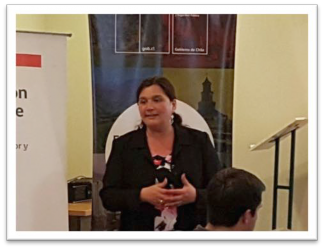
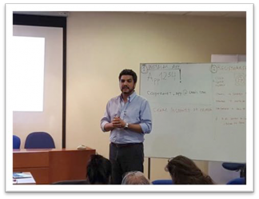
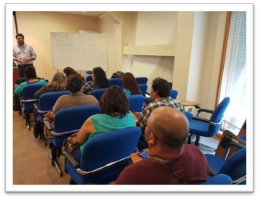

Acta de Reunión # 8

Imágenes de la reunión Fecha: 23, febrero del 2017

Asunto: taller de capacitación unidades vecinales - Presencial
Participantes:
Lorena Soza H., Gobernadora (S)
Carolina Vásquez, Jefa Gabinete
Cristian Cortés, Jefe Modernizacion
Ricardo Coloma, E. Gestión Territorial
Hector Andrade , E. Seguridad

Dirigentes Vecinales
Anibal Contreras, Jefe Proyecto MCI
Objetivo de la reunión:
esiones de transferencia tecnológica para los usuarios de la comunidad.
Temas tratados:

Se presentó la aplicación móvil y web responsiva, se realizaron ejercicios para descargar la aplicación desde Google Play Store y se crearon incidentes en el ambiente de pruebas.
Acuerdos: No Hubo.

www.MiCiudadInteligente.com | contacto@miciudadinteligente.com | +56968554901